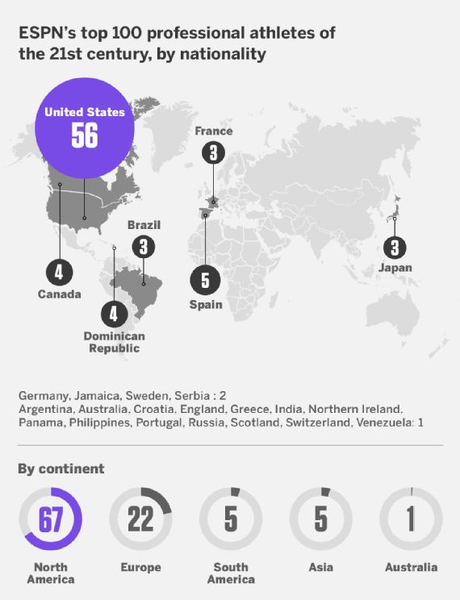
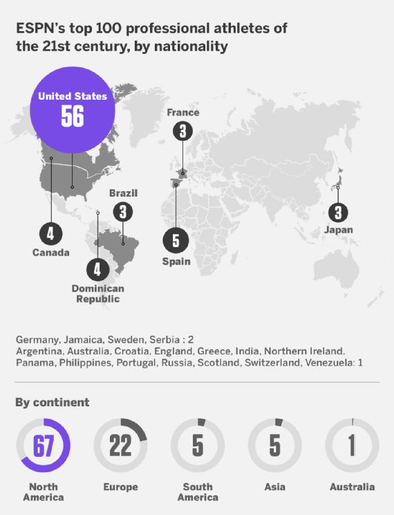
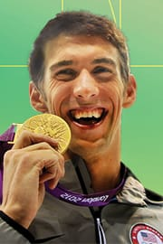
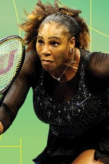
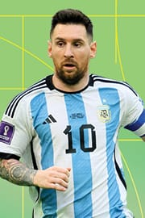

May 19th, 2025
Introduction
Yes, ranking the top 100 most accomplished athletes since 2000 wasn't quite so easy after all -- but it sure was fun. Twenty-five years ago, the ESPN SportsCentury project ranked the top 100 North American athletes of the 20th century. Michael Jordan came in first, followed by Babe Ruth, Muhammad Ali, Jim Brown and Wayne Gretzky. (Ruth should have been No. 1, but hey, I'm a baseball writer.) We also ranked a horse: Secretariat came in at No. 35.
With so many transcendent athletes over the past 25 years, we thought it was time to do another ranking. I promise you there are no horses this time (sorry, American Pharoah). In considering the best athletes of the 21st century, however, we have expanded our choices beyond North America. ESPN editions from around the globe contributed to the nominations and voting process, as well as the individual sport list rankings that will follow.
Voters were instructed to consider only an athlete's performance since 2000. So, for Barry Bonds: He won seven MVP awards, but only four of those came after 2000, as did 317 of his 762 home runs. Or Ken Griffey Jr.: He played until 2010, but all of his best seasons came in the 1990s. Tiger won 13 of his 15 majors from 2000 on, so he's in good shape. Other athletes, such as Patrick Mahomes or Nikola Jokic or Shohei Ohtani, obviously have more greatness ahead of them, so we'll see how high their accomplishments so far get them on the list.
In the end, we received more than 70,000 votes from ESPN contributors to create our top 100.
Let the arguments begin. -- David Schoenfield, ESPN senior writer
 

Methodology
Experts in individual sports were asked to vote to rank the top athletes in their sport since Jan. 1, 2000 (no accomplishments before this date were to be considered). Those votes pared down pools in each sport to lists of 10 to 25 athletes each, which constituted the overall candidate pool for the top athletes of the 21st century so far. Each voter was presented two randomly selected names and asked to pick which one has had the better career in the 21st century. Across repeated, randomized head-to-head matchups, more than 70,000 votes were cast at this stage, and using an Elo rating system, the list was pared down from 262 to 100. That list was then evaluated by a panel of experts for any inconsistencies or oversights, resulting in the top 100 ranking seen here.1. Michael Phelps, Swimming
Key accomplishments: Record 28-time Olympic medalist, 23-time Olympic gold medalist, most gold medals at a single Olympics when he won eight at Beijing in 2008
2. Serena Williams, Tennis
Key accomplishments: 23-time major champion (second most by any player all time), women's record 365 major match wins, 73 career titles are fifth most by a woman in the Open era
3. Lionel Messi, Soccer
Key accomplishments: 10-time LaLiga champion, seven-time Copa del Rey winner, four-time Champions League winner, six-time Champions League top scorer, 17-time FIFA FIFPRO World 11, World Cup winner, two-time Copa America winner, two-time FIFA World Cup Golden Ball winner, eight-time Ballon d'Or winner, record goal scorer for Barcelona and Argentina